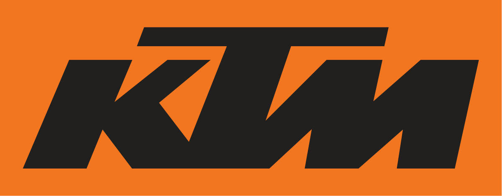

Itseni esittely
Koulutus
- Olen käynyt ala-asteen Tiilikankaan koulussa ja yläasteen Heinsuonkoulussa ja nyt olen ensimmäisellä vuodellani ammattikoulussa Tieto ja viestintätekniikan perustutkinnossa.
- En ole ollut työelämässä muuten, kuin yläasteella suoritetuissa työelämääntutustumis-jaksoissa. Olin 8lk TET:ssä Hollolan uimahallilla ja 9lk olin Kärkkäisellä, Lahdessa. Sain hyvät arvioinnit molemmista TET paikoista, missä olin.
- Olen mielestäni hyvi tekemään käsilläni ja olen muutenkin näppärä. Olen myös hyvä kaksipyöräisten moottoriajoneuvojen kanssa. Osaan huoltaa niitä ja ajaa niillä hyvin. Luonteeltani olen rento, puhelias ja hauska.
- Harrastuksiani ovat mopot ja kevarit ja tykkään ajella niillä, huoltaa niitä ja korjailla/muokkailla niitä tarpeen mukaan. Vapaa-ajallani yleensä myös pelaan tietokoneella CSGO:ta. Olen kiinnostunut kaksipyöräisistä, tietokoneista ja teknologiasta. 
Työkokemus
Erityistaidot ja luonteenpiirteet
Harrastukset ja kiinnostuksen kohteet